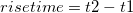

addtool_rise_time -d; を実行)し、このXファンクションのダイアログボックスを開きます。
内容 |
クィックツール：立ち上がり時間
グラフに四角形を表示して、上昇時間と降下時間を分析します。
これはOriginProのみの機能です。V8.1 SR1で改良されています。
addtool_rise_time trGUI.rectcolor:=21 trGUI.tool:=1 trGUI.method:=1 trGUI.output_to.reslog:=1 trGUI.display.risetime:=1;
| 表示 名 |
変数 名 |
I/O と データ型 |
デフォルト 値 |
説明 |
|---|---|---|---|---|
| 設定 | trGUI |
入力 TreeNode |
<unassigned> |
計算オプションをカスタマイズするのに使用できます。 詳細は以下の説明をご覧下さい。 |
立ち上がり時間(または下降時間)は、指定した低状態レベルから指定した高状態レベル(または指定した高状態レベルから指定した低状態レベル)に信号が変化するのに必要な時間を参照します。通常、これらの値は、ステップ高さの10%と90%です。この関数を使って、グラフに追加された四角形で直感的にグラフの領域を選択し、領域内の立ち上がり時間または下降時間を計算することができます。
ステップ状の信号で、低状態レベルと高状態レベルが計算されます。そして、ステップ高は、高状態レベルから低状態レベルを差し引くことで計算することができます。そして、低参照レベルと高参照レベルは、ステップ高の2つの指定したパーセントで計算されます。最後に、立ち上がり時間(または下降時間)の区間に位置付け、信号が低参照レベルから高参照レベルに立ち上がる(または高参照レベルから低参照レベルに下降する)のに必要な時間を計算します。これらのパラメータの関係は、下図の通りです。
trGUI ツリーはXファンクションaddtool_rise_time のすべての設定オプションを指定します。
シンタックス：trGUI.Treenode:=<value>
サンプル:trGUI.rectcolor:=23
| Treenode | ラベル | データ型 | デフォルト | 説明 |
|---|---|---|---|---|
| rectcolor | 塗り色 | 入力 int | 21 | グラフに追加する矩形の色を指定します。この矩形で、グラフ状の領域を選択し、立ち上がり時間または下降時間の分析を適用します。色の選択は、 色のリストをご覧下さい。 |
| tool | ツール | 入力 int | 0 | 立ち上がり時間または下降時間のどちらを計算するかを指定します。以下のオプションがあります。
|
| method | 方法 | 入力 int | 0 | 立ち上がり時間または下降時間の区間に適用される手法を指定します。高状態レベルと低状態レベルの両方が手動で設定されている場合には利用できません。以下のオプションがあります。
|
| input | 立ち上がり範囲/下降範囲 | 入力 TreeNode | <unassigned> | 高/低状態レベルとステップ高に対する高/低参照レベルの比率を指定します。詳細は、下記の立ち上がり範囲/下降範囲サブツリーの表をご覧下さい。 |
| output | 量 | 入力 TreeNode | <unassigned> | 出力する量を指定します。詳細は、下記の量サブツリーの表をご覧下さい。 |
| output_to | 出力先 | 入力 TreeNode | <unassigned> | 結果を出力する場所を指定します。詳細は、下記の出力先サブツリーの表をご覧下さい。 |
| display | グラフ上の表示 | 入力 TreeNode | <unassigned> | インディケータ表示、状態レベル、立ち上がり/下降時間とグラフ上の立ち上がり/下降範囲のプロパティを指定します。詳細は、下記のグラフ上の表示サブツリーの表をご覧下さい。 |
| adv | 詳細 | 入力 TreeNode | <unassigned> | 分析を実行する前に行うスムージング操作についての詳細設定、線形探索法で使われるパラメータ、グラフのスケールが変わったときの結果を制御する方法詳細は、下記の詳細サブツリーの表をご覧下さい。 |
高/低状態レベルと参照レベルを指定します。ツールドロップダウンリストで、立ち上がり時間が選択されている場合、このサブツリーのラベルは立ち上がり範囲となり、下降時間が選択されている場合は、下降範囲となります。
シンタックス：trGUI.input.Treenode:=<value>
サンプル:trGUI.input.from:=20
| ツリーノード | ラベル | データ型 | デフォルト | 説明 |
|---|---|---|---|---|
| highVolt | 高状態レベル | 入力 double | <unassigned> | 高状態レベルを指定します。自動チェックボックスにチェックが付いている場合、この値は指定した手法で計算され、チェックが付いていない場合、値を手動で指定できます。方法 が 最大の三角形 の場合、この変数はGUIには表示されず、値が自動的に計算されます。 |
| lowVolt | 低状態レベル | 入力 double | <unassigned> | 低状態レベルを指定します。自動チェックボックスにチェックが付いている場合、この値は指定した手法で計算され、チェックが付いていない場合、値を手動で指定できます。方法 が 最大の三角形 の場合、この変数はGUIには表示されず、値が自動的に計算されます。 |
| from | 開始 (ステップ高の%) | 入力 double | 10 | 値 n を指定します。低参照レベルがステップ高のn%となります。 |
| to | 終了 (ステップ高の%) | 入力 double | 90 | 値 m を指定します。高参照レベルがステップ高のm%となります。 |
出力する量を指定します。
シンタックス：trGUI.output.Treenode:=<value>
サンプル:trGUI.output.name:=0
| ツリーノード | ラベル | データ型 | デフォルト | 説明 |
|---|---|---|---|---|
| name | データセット名(名前) | 入力 int | 1 | 元のデータセットの名前を出力するかどうかを指定します。以下のオプションがあります。
|
| VMin | 低状態レベル(VMin) | 入力 int | 1 | 低状態レベルを出力するかどうかを指定します。以下のオプションがあります。
|
| VMax | 高状態レベル(VMax) | 入力 int | 1 | 高状態レベルを出力するかどうかを指定します。以下のオプションがあります。
|
| dV | ステップ高さ(dV) | 入力 int | 0 | ステップ高さを出力するかどうかを指定します。以下のオプションがあります。
|
| VrefMin | 低参照レベル(VrefMin) | 入力 int | 1 | 低参照レベルを出力するかどうかを指定します。以下のオプションがあります。
|
| VrefMax | 高参照レベル(VrefMax) | 入力 int | 1 | 高参照レベルを出力するかどうかを指定します。以下のオプションがあります。
|
| dVref | 立ち上がり範囲(dVref)/下降範囲(dVref) | 入力 int | 0 | 立ち上がり範囲/下降範囲を出力するかどうかを指定します。ツールドロップダウンリストで、立ち上がり時間が選択されている場合、このラベルは立ち上がり範囲(dVref)となり、下降時間が選択されている場合は、下降範囲(dVref)となります。以下のオプションがあります。
|
| T1 | 低参照レベルの時間(T1) | 入力 int | 1 | 低参照レベルの時間を出力するかどうかを指定します。以下のオプションがあります。
|
| T2 | 高参照レベルの時間(T2) | Inupt int | 1 | 高参照レベルの時間を出力するかどうかを指定します。以下のオプションがあります。
|
| dT | 立ち上がり時間(dT)/下降時間(dT) | 入力 int | 1 | 立ち上がり時間/下降時間を出力するかどうかを指定します。ツールドロップダウンリストで、立ち上がり時間が選択されている場合、このラベルは立ち上がり時間(dT)となり、下降時間が選択されている場合は、下降時間(dT)となります。以下のオプションがあります。
|
| 速度 | 立ち上がり/降下速度 (速度) | 入力 int | 0 | スムージングされたデータに基づくdVref/dTによって計算された立ち上がり/降下速度を出力するかどうかを指定します。以下のオプションがあります。
|
| 最大速度 | 最大立ち上がり/降下速度 (最大速度) | 入力 int | 0 | T1とT2の間のは最大微分値である、最大立ち上がり時間/下降速度を出力するかどうかを指定します。最大速度はスムージングされたデータに基づき計算されます。以下のオプションがあります。
|
| e1 | 低ノイズレベル(e1) | 入力 int | 0 | 低レベルの基線領域でのノイズレベルを出力するかどうか指定します。以下のオプションがあります。
|
| e2 | 高ノイズレベル(e2) | 入力 int | 0 | 高レベルの基線領域でのノイズレベルを出力するかどうか指定します。以下のオプションがあります。
|
結果を出力する場所を指定します。
シンタックス：trGUI.output_to.Treenode:=<value>
サンプル:trGUI.output_to.reslog:=1
| ツリーノード | ラベル | データ型 | デフォルト | 説明 |
|---|---|---|---|---|
| script | スクリプトウィンドウ | 入力 int | 1 | スクリプトウィンドウに結果を出力します。以下のオプションがあります。
|
| reslog | 結果ログ | 入力 int | 0 | 結果ログに結果を出力します。以下のオプションがあります。
|
| appendwks | ワークシートに追加 | 入力 int | 0 | ワークシートに出力結果を追加します。以下のオプションがあります。
|
| wbkName | 結果のワークシート名 | 入力 string | QkRiseTime | ワークシートに追加チェックボックスが選択されているときのみ利用できます。結果が追加されるワークシートの名前を指定しします。 |
シンタックス：trGUI.display.Treenode:=<value>
サンプル:trGUI.display.risetime:=1
| ツリーノード | ラベル | データ型 | デフォルト | 説明 |
|---|---|---|---|---|
| indicator | インディケータ | 入力 TreeNode | <unassigned> | インジケータの設定を指定します。詳細は、下記のインジケーターの表をご覧下さい。 |
| statelevel | 状態レベル | 入力 int | 1 | 低/高状態レベルを作成する2つの水平線を表示するかどうかを指定します。 |
| risetime | 立ち上がり時間/下降時間 | 入力 int | 0 | 立ち上がり時間/下降時間を作成するために2つのインジケータを通じて2つの垂直線を表示するかどうかを指定します。ツールドロップダウンリストで、立ち上がり時間が選択されている場合、このラベルは立ち上がり時間となり、下降時間が選択されている場合は、下降時間となります。 |
| riserange | 立ち上がり範囲/下降範囲 | 入力 int | 0 | 立ち上がり範囲/下降範囲を作成する2つのインジケータを通る2つの水平線を表示するかどうかを指定します。ツールドロップダウンリストで、立ち上がり時間が選択されている場合、このサブツリーのラベルは立ち上がり範囲となり、下降時間が選択されている場合は、下降範囲となります。 |
インジケータテーブル
シンタックス：trGUI.display.indicator.Treenode:=<value>
サンプル:trGUI.display.indicator.size:=11
| ツリーノード | ラベル | データ型 | デフォルト | 説明 |
|---|---|---|---|---|
| size | サイズ | 入力 int | 10 | インジケータサイズを選択します。 |
| shape | シンボル | 入力 int | 0 | インジケータのシンボルを選択します。シンボルについての詳細は、 作図の詳細のシンボルタブを参照して下さい。 |
| edgecolor | 縁の色 | 入力 int | 0 | 低/高参照レベルを示すインジケータの縁の色を指定します。色の選択は、 色のリストをご覧下さい。 |
| fillcolor | 塗り色 | 入力 int | 1 | 低/高参照レベルを示すインジケータを塗りつぶす色を指定します。色の選択は、 色のリストをご覧下さい。 |
立ち上がり時間/下降時間の分析を実行する前のスムージングについての詳細な設定
シンタックス：trGUI.adv.Treenode:=<value>
サンプル:trGUI.adv.pts:=60
| ツリーノード | ラベル | データ型 | デフォルト | 説明 |
|---|---|---|---|---|
| lnsearch | 高低レベルの決定項目 | 入力 int | 0 | 手法が線形探索にセットされている場合のみ利用できます。低/高状態レベルをどのように探索するかを指定する際に使用します。以下のオプションがあります。 |
| pts | スムージングポイント | 入力 int | 50 | 手法が線形探索にセットされている場合のみ利用できます。立ち上がり時間/下降時間の分析を実行する前にデータセット全体に実行されるスムージングで使われるポイント数を指定するのに使われます。この値は1から200までの整数値です。 |
| pts2 | 立ち上がり/下降領域でのスムーズポイント数 | 入力 int | 1 | 立ち上がり領域/下降領域に適用されるスムージングで使われるポイント数を指定します。この値は1から50までの整数値です。 |
| tol | 許容値(パーセント) | 入力 double | 0.03 | レベル値の許容値を指定します。この値より小さい値は、ノイズとして扱われます。手法が線形探索またはヒストグラムにセットされている場合のみ利用できます。 |
| bins | ビンの数 | 入力 int | 256 | 方法がヒストグラムにセットされている場合のみ利用できます。ヒストグラム法で使用されるビンの数を指定します。 |
| onrescale | グラフのスケールの変化時 | 入力 int | 0 | グラフスケールが変わったときに実行される操作を指定します。以下のオプションがあります。
|
| noiseUnit | ノイズレベル単位 | 入力 int | 0 | ノイズレベルの単位を指定します。以下のオプションがあります。
|
次のステップは、グラフにあるステップ状信号の立ち上がり時間を計算するものです。
addtool_rise_time -d; を実行)し、このXファンクションのダイアログボックスを開きます。
この関数は、立ち上がり/下降時間を計算する3つの手法を提供しています。線形探索とヒストグラムの2つです。
立ち上がり時間の計算を例に取ります。ステップ高さのdTol1%からステップ高さのdTol2%まで信号が立ち上がる時間を計算します。(ここで 0<dTol1<dTol2<100です。)
ステップ：
そして、t1とt2の間の領域が立ち上がり領域で、 .
この手法が使われるとき、状態レベルのヒストグラムがデータから作成されます。このヒストグラムの限界値は、データセットの最小値と最大値でセットされ、ビン数はデフォルトで256となります。そして、各ビンに入るデータ標本の数が数えられます。次の図は、ヒストグラムのサンプルです。このグラフから下側40%のビンの中に入る最大数を持つビン(グラフの下側ビン)の平均値が低状態レベルとして計算されます。上側の40%にあるビン(グラフの上側ビン)対して同じ計算で高状態レベルを計算します。

ヒストグラムを使って低状態レベルと高状態レベルの位置を決めた後、線形探索のステップ3方法で、立ち上がり時間または下降時間を計算します。
下図から、開始点と終了点を通る線が構築されます。この線は、ベースラインと呼ばれます。そして、ベースラインの左上にある点を探します。点とベースラインによって構築された三角形が最大の領域を持つとき、この点の垂直な座標は高状態レベルとなります。同じような探索が、低状態レベルの値を見つけるためにベースラインの右下にある点にも実行されます。

低状態レベルと高状態レベルの位置を決めた後、線形探索のステップ3方法で、立ち上がり時間または下降時間を計算します。